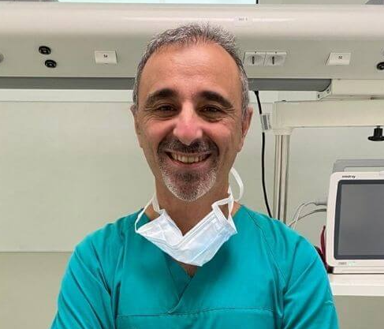

Cardióloga

Dra. Laura Martínez
Clínica San José
08:00 - 16:00
4.7
Médico General
Dr. Raúl Hoyos
Hospital del Niño
11:00 - 21:00
4.9
Pediatra
Dra. Claudia Ruiz
Hospital San Miguel Arcángel
09:00 - 17:00
4.9
Cardiólogo
Dr. Manuel Fuentes
Hospital Santo Tomás
09:00 - 18:00
4.8
Ortopeda
Dr. Emanuel Flores
Hospital Punta Pacífica
08:00 - 14:00
4.9
Odontología
Dr. Francisco Paredes
Policlínica J.J. Vallarino
09:00 - 17:00
4.7
Pediatra
Dra. Laura Ruiz
Hospital del Niño
09:00 - 19:00
4.8
Otorrino
Dr. Daniel Aguirre
Hospital del Este
07:00 - 13:00
4.9
Psiquiatría
Dra. Elizabeth Rodríguez
Hospital San Fernando
09:00 - 22:00
4.9
Cirujano General
Dr. Ben Allen
Hospital Punta Pacífica
09:00 - 17:00
4.9
Historial de Citas
-
Dr. Ana Torres (Cardióloga)
– Clínica Santa Fe – 12/07/2025 -
Dr. Luis Pérez (Dermatólogo)
– Hospital Central – 05/07/2025 -
Dra. Carmen Ríos (Pediatra)
– Centro Médico Sur – 28/06/2025